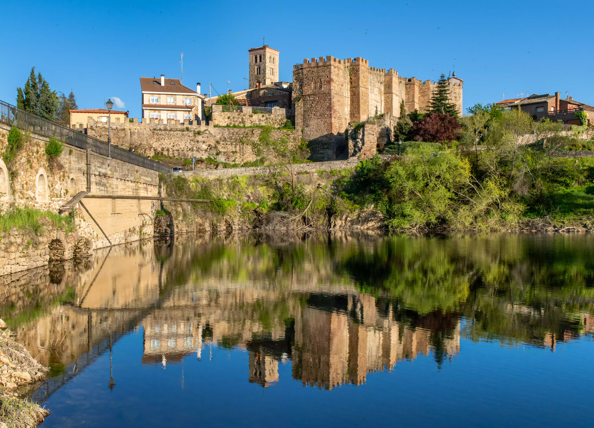
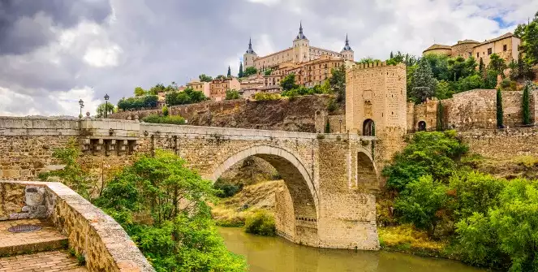
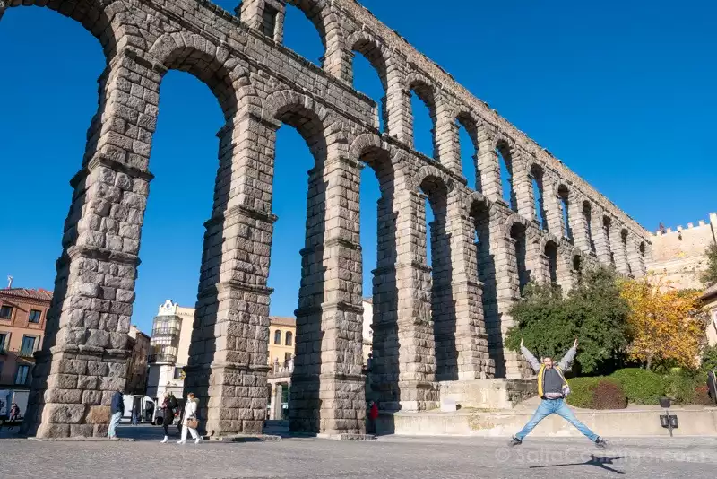
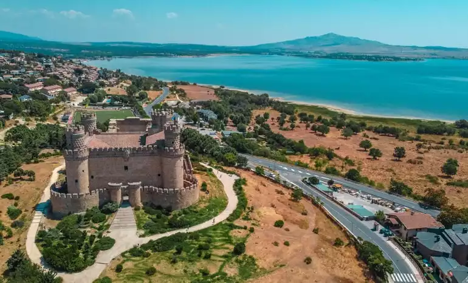
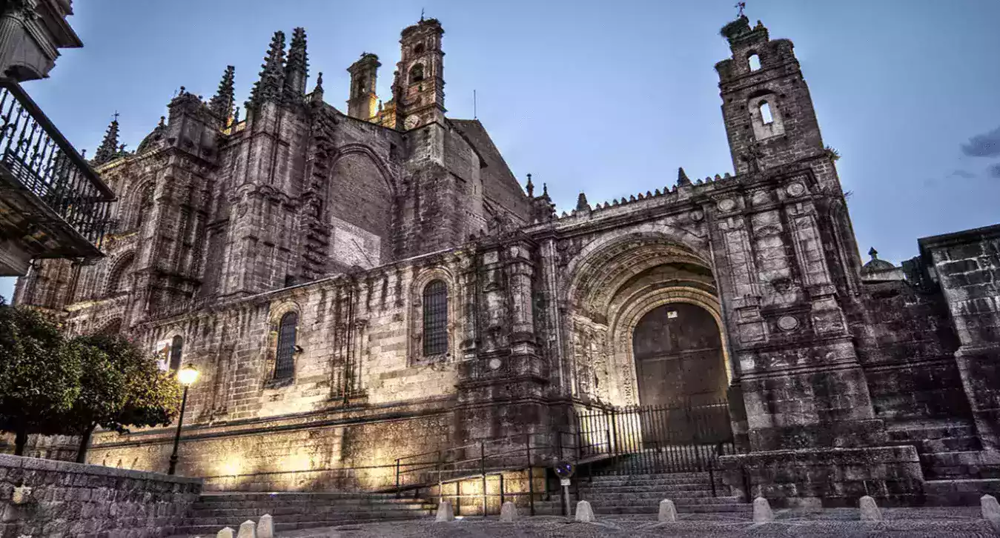

Pueblos mágicos
Madrid es arte, cultura, música y multifacética. Tiene un plan para cada día de nuestras vacaciones. ¿Pero qué pasa cuando queremos descansar? ¿Qué pasa cuando queremos escaparnos hacia la tranquilidad?
Hoy te traigo cuatro pueblos mágicos cerca de Madrid para que puedas visitar y te enamorés de la historia de España y obvio, también de su comida.
Buitrago de Lozoya

Buitrago de Lozoya es una hermosa villa medieval situada en la Comunidad de Madrid, España. Se encuentra a unos 75 kilómetros al norte de la ciudad de Madrid y es accesible en coche a través de la A-1 o en transporte público utilizando la línea de autobús 191 desde el Intercambiador de Plaza de Castilla.
- Explorar la antigua muralla de la ciudad
- Visitar el Castillo de Buitrago, que alberga un museo dedicado a la obra de Francisco de Goya
- Dar un paseo por el casco antiguo de la villa, admirando la arquitectura tradicional
- Visitar la Iglesia de Santa María del Castillo, una hermosa iglesia románica del siglo XIII
- Disfrutar de la naturaleza y dar un paseo por las orillas del río Lozoya
- Visitar el Parque de la Dehesa, un parque natural con senderos y áreas de picnic
- Probar la gastronomía local, especialmente los platos de cordero y cochinillo asado
- Visitar el Centro de Interpretación de la Naturaleza, que ofrece información sobre la flora y fauna de la zona
- Participar en alguna de las actividades al aire libre que se ofrecen en la zona, como senderismo, piragüismo, ciclismo o pesca
- Disfrutar de las vistas panorámicas de la Sierra de Guadarrama desde varios miradores cercanos a la villa
Toledo

Toledo es una ciudad histórica y cultural de España, situada a unos 70 kilómetros al sur de Madrid.
Es accesible en transporte público desde Madrid, en tren de alta velocidad desde la estación de Atocha o en autobús desde la estación de autobuses de Plaza Eliptica. El trayecto dura aproximadamente 30 minutos en tren y 1 hora en autobús.
- Visitar la Catedral de Toledo, una impresionante catedral gótica que alberga importantes obras de arte
- Explorar el Alcázar de Toledo, una fortaleza que ha servido como residencia real y actualmente alberga un museo militar
- Recorrer el casco histórico de la ciudad, con su impresionante arquitectura medieval y renacentista
- Visitar la Sinagoga de Santa María la Blanca, una hermosa sinagoga mudéjar del siglo XIII
- Descubrir el Monasterio de San Juan de los Reyes, un monasterio gótico construido en el siglo XV
- Admirar las vistas panorámicas de la ciudad desde el Mirador del Valle o desde el Puente de San Martín
- Probar la gastronomía local, especialmente el famoso mazapán toledano
- Visitar el Museo del Greco, dedicado al famoso pintor del siglo XVI que vivió y trabajó en Toledo
- Pasear por el barrio judío, con sus estrechas calles y patios llenos de historia
- Explorar el Taller del Moro, una casa-museo dedicada al arte y la cerámica
Segovia

Segovia está a 90km kilómetros al norte de Madrid. También es posible llegar en tren de alta velocidad desde la estación de Chamartín o en autobús desde la estación de autobuses de Moncloa. El trayecto dura aproximadamente 30 minutos en tren y 1 hora en autobús.
- Visitar el Acueducto de Segovia, una impresionante obra de ingeniería romana del siglo I d.C.
- Explorar el Alcázar de Segovia, una fortaleza medieval que ha servido como palacio real y actualmente alberga un museo
- Recorrer el casco histórico de la ciudad, con sus estrechas calles empedradas y sus impresionantes edificios históricos
- Visitar la Catedral de Segovia, una hermosa catedral gótica con importantes obras de arte
- Admirar las vistas panorámicas de la ciudad desde el Mirador de la Pradera de San Marcos o desde el Mirador de la Canaleja
- Probar la gastronomía local, especialmente el famoso cochinillo asado y los judiones de la Granja
- Visitar el Monasterio del Parral, un monasterio gótico del siglo XV situado en un hermoso entorno natural
- Pasear por el barrio judío, con sus estrechas calles y patios llenos de historia
- Explorar la Iglesia de San Esteban, una hermosa iglesia románica del siglo XII
- Visitar el Museo de Segovia, dedicado a la historia y el patrimonio de la ciudad
Manzanares el Real

Manzanres el Real es una pequeña villa situada a unos 50 kilómetros al norte de Madrid, en la Sierra de Guadarrama.
Para llegar a Manzanares el Real desde Madrid, se puede tomar un autobús desde la estación de autobuses de Plaza Castilla o en coche por la autopista A-1, en dirección Burgos.
- Visitar el Castillo de los Mendoza, una impresionante fortaleza construida en el siglo XV y uno de los castillos mejor conservados de la Comunidad de Madrid
- Pasear por el casco histórico de la villa, con sus estrechas calles empedradas y sus edificios históricos
- Disfrutar de la naturaleza en el Parque Regional de la Cuenca Alta del Manzanares, con sus senderos, rutas de montaña y vistas panorámicas
- Realizar actividades al aire libre, como el senderismo, la escalada, el parapente o la equitación
- Visitar el Santuario de la Peña Sacra, situado en un hermoso paraje natural y considerado como uno de los lugares más sagrados de la Sierra de Guadarrama
- Descubrir la ermita de Nuestra Señora de la Nava, una pequeña iglesia románica situada en un entorno natural privilegiado
- Explorar la Cueva del Reguerillo, una cueva prehistórica situada en las laderas de la Sierra de Guadarrama
- Probar la gastronomía local, especialmente la carne de cordero y los productos típicos de la Sierra de Guadarrama, como las setas y los quesos
- Relajarse en el Embalse de Santillana, un hermoso lago situado en un entorno natural privilegiado
- Visitar el Centro de Interpretación del Parque Regional de la Cuenca Alta del Manzanares, donde se puede conocer más sobre la fauna, flora y geología de la zona
PLUS: Plasencia (Extremadura)

Plasencia es una hermosa ciudad situada en la provincia de Cáceres, en la comunidad autónoma de Extremadura. Con una rica historia y un patrimonio arquitectónico maravilloso, Plasencia es conocida por sus monumentos, su encanto medieval y su ambiente tranquilo.
- Visitar la Catedral de Plasencia, una imponente iglesia gótica construida en el siglo XIII.
- Explorar la Plaza Mayor de Plasencia, un hermoso espacio rodeado de edificios históricos.
- Pasear por las murallas medievales de la ciudad y disfrutar de las vistas panorámicas.
- Visitar el Palacio Episcopal, un impresionante edificio renacentista que alberga el Museo Catedralicio.
- Recorrer el Casco Antiguo de Plasencia, descubriendo calles estrechas, plazas encantadoras y casas señoriales.
- Explorar el Parque de los Pinos, un hermoso parque urbano perfecto para relajarse y disfrutar de la naturaleza.
- Descubrir la Iglesia de San Nicolás, un magnífico ejemplo de arquitectura gótica.
- Visitar el Palacio de Mirabel, una antigua fortaleza que ahora alberga una escuela de hostelería.
- Disfrutar de la gastronomía local en los restaurantes y bares de la ciudad, probando platos tradicionales de la región.
- Participar en festivales y eventos culturales que se celebran a lo largo del año en Plasencia.